In this section, there is information about the various demon types in doom and their stats. At the end of the list,
there will be a short list of combinations and utilization ideas for your maps.
Zombieman
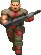
Or possessed based on the game's files. The zombieman is a fallen soldier that was consumed by the underworld's energy and now
fights against you.
Health: 20
Speed: 70 u/s
Damage: 3-15
Imp
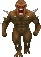
The imp is a lowly demon from the underwold. It is stronger than the zombies and fires flame-based projectiles instead
of using hitscan weaponry.
Health: 60
Speed: 93 u/s
Damage: 3-24
Shotgunner
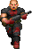
The shotgunner is a variant of the zombieman, the difference being that this one weilds a shotgun. He is a little stronger
than the zombieman, dealing more damage and having a little more health and speed.
Health: 30
Speed: 93 u/s
Damage: 3-45
Pinky
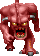
The pinky is a demon that lacks any ranged attacks. It runs at you and tries to limit your movement by getting
in your face. When playing on nightmare or having fast monsters enabled, it's speed is doubled. It will also flinch less
when hurt. Using the chainsaw no longer stunlocks pinkies on nightmare, making it not a viable weapon at those
difficulties.
Health: 150
Speed: 175-350 u/s
Damage: 4-40
Cacodemon
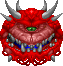
The cacodemon is a floating demon that fires projectiles from its mouth. It floats around rather slowly and will bite you if
you get too close.
Health: 400
Speed: 93 u/s
Damage: 6-60
Knight
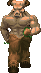
The knight is a tanky version of the imp. It behaves in a very similar way and fires much stronger projectiles.
Health: 500
Speed: 93 u/s
Melee Damage: 8-80
Ranged Damage: 8-64
Baron
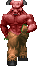
The baron is an even tankier knight. Other than his health, he is the same as the knight.
Health: 1000
Speed: 93 u/s
Melee Damage: 8-80
Ranged Damage: 8-64
Arachnotron
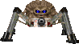
The arachnotron is a large half body half machine creature that fires a stream of projectiles. The arachnotron can make any room
a lot harder to navigate.
Health: 500
Speed: 140 u/s
Damage: 5-40
Chaingunner
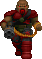
The chaingunner is another variant of the zombie that weilds a chaingun with a high rate of fire. The chaingunner is brutal
in large open areas since it uses hitscan instead of dodgeable projectiles.
Health: 70
Speed: 93 u/s
Damage: 3-15
Revenant
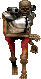
The revenant is a skeleton with twin rocket launchers mounted on each shoulder. It fires a rockets that either go straight or
chase you. The revenant puts your ability to dodge projectiles to the test.
Health: 300
Speed: 175 u/s
Melee Damage: 6-60
Ranged Damage: 10-80
Mancubus
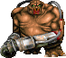
The mancubus is man mixed with machine. It weilds two flamethrowers that shoot large flame-based projectiles in a burst.
Health: 600
Speed: 70 u/s
Damage: 8-64
Pain Elemental
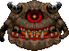
The pain elemental is a being that feels immeasurable pain. It attacks by spawning lost souls from it's fiery interior.
It doesn't deal damage directly and floats around. If left alone for too long, an entire room can be filled with ghostly skulls.
Health: 400
Speed: 93 u/s
Damage: Doesn't directly deal damage, look at lost soul for damage.
Lost Soul
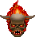
The lost soul is quite simply a lost soul. The skulls charge at you trying to ram into you. While charging, they are incredibly
fast, but can be pretty easily dodged.
Health: 100
Speed: 47-700 u/s
Damage: 3-24
Archvile
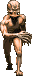
The Archvile, one of the most notorious demons in Doom. It has the ability to resurect fallen demons in an instant, making all
that ammo and dodging worthless. It also has a devestating fire attack that can only be dodged by putting a wall between you and the
Archvile. This demon should be used sparingly.
Health: 700
Speed: 262 u/s
Damage: 90
Cyberdemon
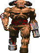
The Cyberdemon is the ruler of all demons. It is feared by all other demons. It has a rocket launcher for an arm, which deals
incredibly damaging rockets. It also has an incredible amount health.
Health: 4000
Speed: 187 u/s
Damage: 20-160
Spider Mastermind
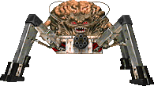
The Spider Mastermind is the being that orchestrated the invasion on Earth. It weilds a super chaingun, which in the game
functions as an automatic shotgun. The Spider Mastermind is also very large, making it incredibly hard to get around.
Health: 3000
Speed: 140 u/s
Damage: 3-45